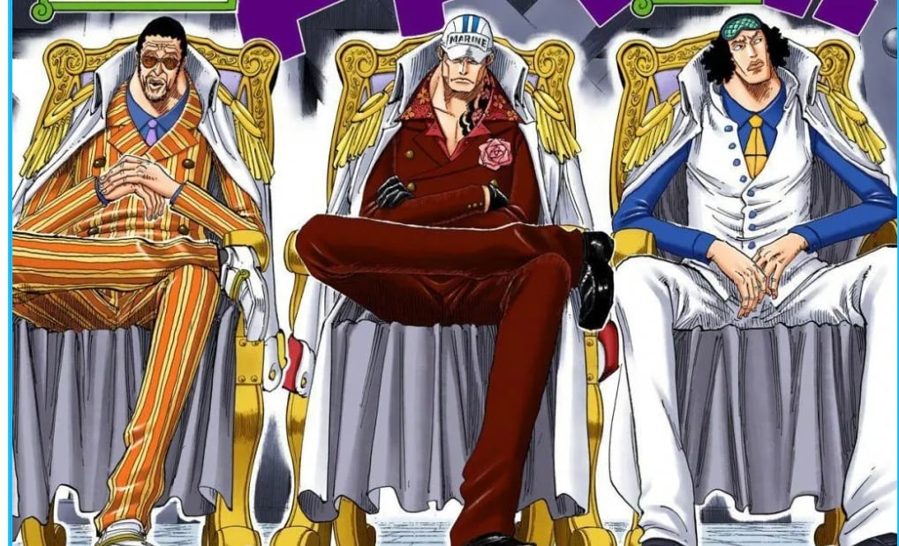
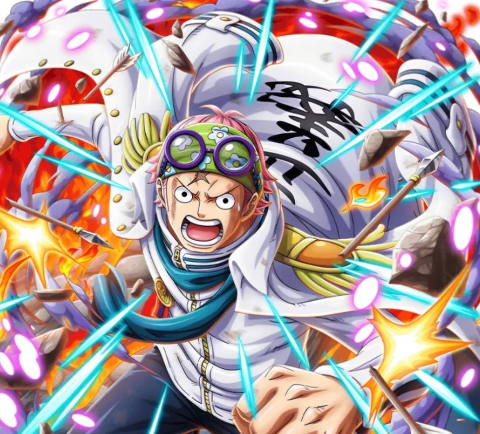
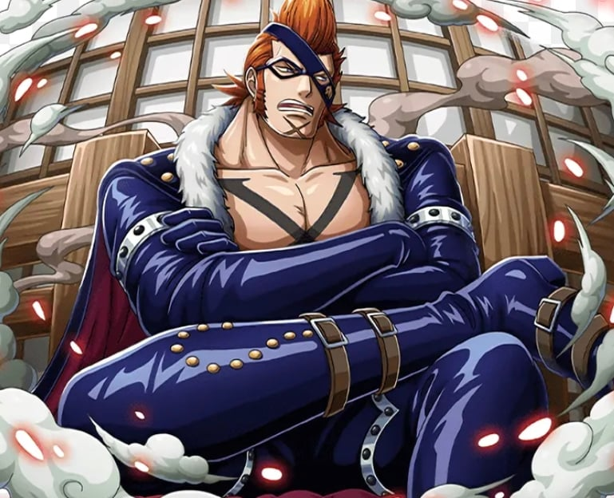
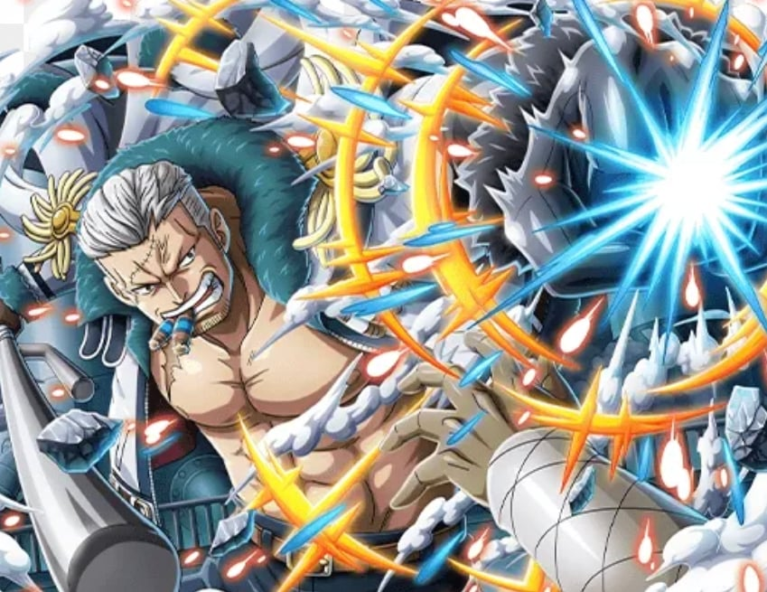

기존 3대장 키자루, 아카이누, 아오키지



현 상황상 미래에 3대장으로 남는게 유력할
코비, 드레이크 , 스모커
아 지랄났다! ㅋㅋ

기존 3대장 키자루, 아카이누, 아오키지



현 상황상 미래에 3대장으로 남는게 유력할
코비, 드레이크 , 스모커
아 지랄났다! ㅋㅋ
여기서 코비가 제일 쎄잖아 ㅋㅋ
이미 영웅칭호받고 거프의 공인후계자로 자리확인된 코비는 그럴수있고 드레이크까지도 그러려니하는데 좆모커는..한게뭐지..?
그저 화이트 블로우!
루피랑 친구 먹으면 바로 각성 모드 한다
쟤들보다 센 놈들 다 사라진 뒤일텐데 억제력 충분하지 뭐 ㅋㅋ
드레이크 해적아님?? 루피랑 뭐지 뭔세대 그거아닌가
해적인척 하는 해군임
현 해군 특수부대 소드 대장
스모커는 성장하긴함?